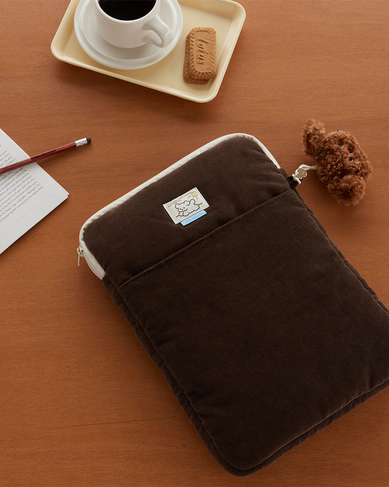
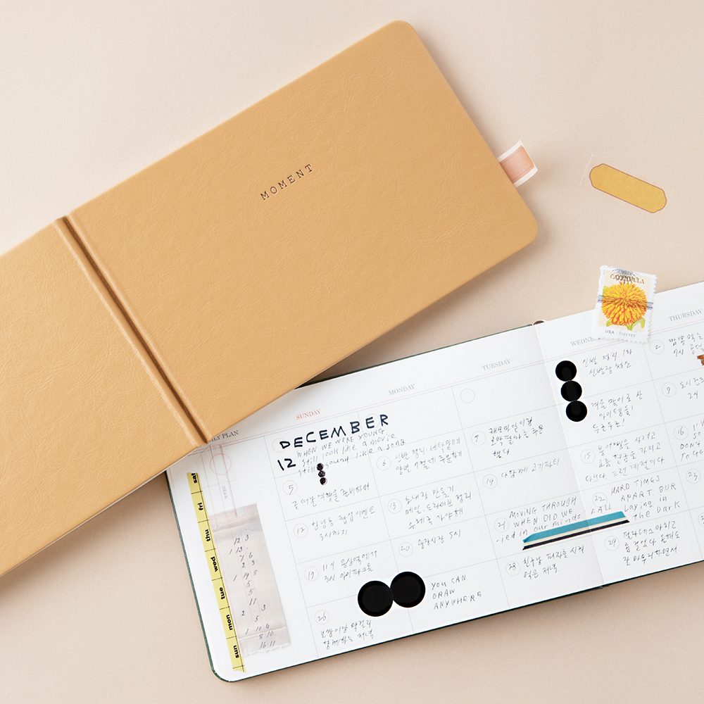
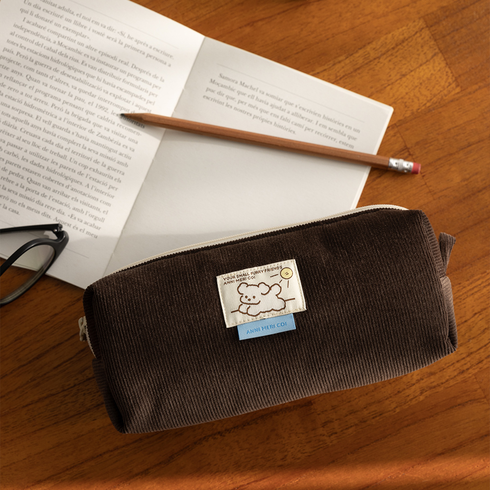

一种属于韩国的生活节奏
在韩国，「生活风格（Lifestyle）」不仅仅是房间布置或桌面整理，也可以是一种照顾自己的方式。
我常常会在韩国的文具与生活设计里，看到这种很轻松的感觉。
一些简单的文具、柔和的颜色，还有放在桌边的小物，不需要特别显眼，却能让每天的生活多一点自己的节奏。
LIVEWORK 给我的感觉，也是如此。
① 温柔，不代表复杂
LIVEWORK 的设计很简单，没有复杂的图案，也没有过多的装饰。
它使用柔和的色彩、可爱的插画，以及留白较多的版面，让每件物品即使放在桌上很久，也不会让人觉得疲劳。
它的温柔，不是为了吸引目光，而是为了能够陪伴日常。

② 每天都会陪伴你
它拍摄产品的方式，也让我留下很深的印象。
官方照片很少刻意强调商品本身，而是让它自然地出现在桌面、书本、文具或背包旁。
它让我感觉，这些物品并不是主角，而是生活里一直陪伴着你的存在。

③ 好的设计不会抢走你的注意力
从一些使用者的分享里，我看到的并不是对“华丽设计”的追求，而是那些使用起来舒服、看起来轻松的小东西。
收纳袋柔软轻便，卡包简单耐看，日记本则保留了足够的留白，让每个人都能用自己的方式记录生活。
有使用者特别喜欢品牌包装上的一句话：
或许，也正是这句话，说明了 LIVEWORK 想传达的生活态度。
从这些品牌与使用者分享中，我感受到，记录生活对许多人来说，不只是整理行程，更是一种整理心情的方式。
当把烦恼写下来，它们似乎也没有原本想象中那么沉重。

Why Soft Archive Collects It
有些设计，并不是为了让别人注意。
而是为了让每天的生活，在目光所及之处多一点平静。
那些每天都会陪伴着我们的小物，或许不会改变生活，却会默默影响我们面对生活的心情。
A Small Detail I Love
我很喜欢 LIVEWORK 摄影里的生活感。
桌面并不总是完全空白，物品也不一定被摆放得非常整齐。
咖啡、书、文具和小袋子，就这样一起出现在画面里。
它们看起来不像是在展示商品，而像是真的有人正在这里生活。
What Caught My Attention
- 官方摄影大量使用米白色、木质桌面与自然光。
- 产品几乎都出现在真实生活场景，而不是纯白背景。
- 插画简单，却不会让人很快看腻。
- 我很喜欢他们拍摄产品的方式，因为它们看起来不像商品，而像已经陪伴你很久的生活用品。
Signature Piece
Livework Diary
一本保留大量留白的日记本，没有规定应该如何记录，只希望每个人都能找到属于自己的节奏。
Archive Information
| Theme | Companion | 陪伴 |
| Theme Color | Soft Sage |
| Country | Korea |
| Location | Seoul |
| Founded | 2002 |
| Category | Lifestyle & Stationery |
| Materials | Paper · Fabric |
Who It's For
- 🌿 喜欢让生活多一点仪式感的人
- 📒 喜欢简单、耐看的文具与设计的人
- 🎁 想寻找有温度礼物的人
- ☁️ 希望每天都能留一点时间给自己的人
有时候，我们真正需要的，并不是更快完成事情，而是在忙碌的日子里，留一点空间给自己。
那些每天陪伴着我们的物品，也会慢慢影响我们看待生活的方式。
LIVEWORK 也提醒了我：好的设计，不一定需要吸引所有人的目光。它更重要的是，在每天都会看见的地方，让生活多一点平静。
Sources
This archive is an independent editorial project by Soft Archive. Product names, trademarks and images belong to their respective owners. Soft Archive is not affiliated with LIVEWORK.